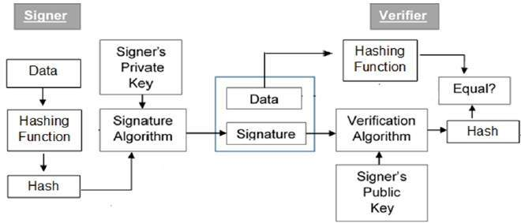

<!DOCTYPE html>
<html xmlns="http://www.w3.org/1999/xhtml" lang="" xml:lang="">
    <head>
        <meta charset="utf-8" />
        <meta name="generator" content="markdown-it" />
        <meta name="viewport" content="width=device-width, initial-scale=1.0, user-scalable=yes" />
        <meta name="author" content="runner" />
        <meta name="dcterms.date" content="2025-04-09 13:28:34.350" />
        <title>certificati_digitali_e_CA</title>
        <style type="text/css">
            code {
                white-space: pre-wrap;
            }
            span.smallcaps {
                font-variant: small-caps;
            }
            span.underline {
                text-decoration: underline;
            }
            div.column {
                display: inline-block;
                vertical-align: top;
                width: 50%;
            }
        </style>
        <style type="text/css">
            a.sourceLine {
                display: inline-block;
                line-height: 1.25;
            }
            a.sourceLine {
                pointer-events: none;
                color: inherit;
                text-decoration: inherit;
            }
            a.sourceLine:empty {
                height: 1.2em;
            }
            .sourceCode {
                overflow: visible;
            }
            code.sourceCode {
                white-space: pre;
                position: relative;
            }
            div.sourceCode {
                margin: 1em 0;
            }
            pre.sourceCode {
                margin: 0;
            }
            @media screen {
                div.sourceCode {
                    overflow: auto;
                }
            }
            @media print {
                code.sourceCode {
                    white-space: pre-wrap;
                }
                a.sourceLine {
                    text-indent: -1em;
                    padding-left: 1em;
                }
            }
            pre.numberSource a.sourceLine {
                position: relative;
                left: -4em;
            }
            pre.numberSource a.sourceLine::before {
                content: attr(title);
                position: relative;
                left: -1em;
                text-align: right;
                vertical-align: baseline;
                border: none;
                pointer-events: all;
                display: inline-block;
                -webkit-touch-callout: none;
                -webkit-user-select: none;
                -khtml-user-select: none;
                -moz-user-select: none;
                -ms-user-select: none;
                user-select: none;
                padding: 0 4px;
                width: 4em;
                background-color: #ffffff;
                color: #a0a0a0;
            }
            pre.numberSource {
                margin-left: 3em;
                border-left: 1px solid #a0a0a0;
                padding-left: 4px;
            }
            div.sourceCode {
                color: #1f1c1b;
                background-color: #ffffff;
            }
            @media screen {
                a.sourceLine::before {
                    text-decoration: underline;
                }
            }
            code span {
                color: #1f1c1b;
            } /* Normal */
            code span.al {
                color: #bf0303;
                background-color: #f7e6e6;
                font-weight: bold;
            } /* Alert */
            code span.an {
                color: #ca60ca;
            } /* Annotation */
            code span.at {
                color: #0057ae;
            } /* Attribute */
            code span.bn {
                color: #b08000;
            } /* BaseN */
            code span.bu {
                color: #644a9b;
                font-weight: bold;
            } /* BuiltIn */
            code span.cf {
                color: #1f1c1b;
                font-weight: bold;
            } /* ControlFlow */
            code span.ch {
                color: #924c9d;
            } /* Char */
            code span.cn {
                color: #aa5500;
            } /* Constant */
            code span.co {
                color: #898887;
            } /* Comment */
            code span.cv {
                color: #0095ff;
            } /* CommentVar */
            code span.do {
                color: #607880;
            } /* Documentation */
            code span.dt {
                color: #0057ae;
            } /* DataType */
            code span.dv {
                color: #b08000;
            } /* DecVal */
            code span.er {
                color: #bf0303;
                text-decoration: underline;
            } /* Error */
            code span.ex {
                color: #0095ff;
                font-weight: bold;
            } /* Extension */
            code span.fl {
                color: #b08000;
            } /* Float */
            code span.fu {
                color: #644a9b;
            } /* Function */
            code span.im {
                color: #ff5500;
            } /* Import */
            code span.in {
                color: #b08000;
            } /* Information */
            code span.kw {
                color: #1f1c1b;
                font-weight: bold;
            } /* Keyword */
            code span.op {
                color: #1f1c1b;
            } /* Operator */
            code span.ot {
                color: #006e28;
            } /* Other */
            code span.pp {
                color: #006e28;
            } /* Preprocessor */
            code span.re {
                color: #0057ae;
                background-color: #e0e9f8;
            } /* RegionMarker */
            code span.sc {
                color: #3daee9;
            } /* SpecialChar */
            code span.ss {
                color: #ff5500;
            } /* SpecialString */
            code span.st {
                color: #bf0303;
            } /* String */
            code span.va {
                color: #0057ae;
            } /* Variable */
            code span.vs {
                color: #bf0303;
            } /* VerbatimString */
            code span.wa {
                color: #bf0303;
            } /* Warning */
        </style>
        <!--
  Firefox non carica font da locale quindi il font può non essere visibile
  quando di carica la pagina da locale.
  Bisogna impostare about:config
    security.fileuri.strict_origin_policy = false
  -->
        <link rel="stylesheet" href="../../inc/css/katex.min.css" />
        <link rel="stylesheet" href="../../inc/css/fonts/google_fonts.css" />
        <!-- <link href="https://cdn.jsdelivr.net/npm/bootstrap@5.3.0-alpha1/dist/css/bootstrap.min.css" rel="stylesheet" integrity="sha384-GLhlTQ8iRABdZLl6O3oVMWSktQOp6b7In1Zl3/Jr59b6EGGoI1aFkw7cmDA6j6gD" crossorigin="anonymous"> -->
        <link rel="stylesheet" href="../../inc/css/bootstrap.min.css" />
        <link rel="stylesheet" href="../../inc/css/cdp.css" />
        <!--[if lt IE 9]>
            <script src="//cdnjs.cloudflare.com/ajax/libs/html5shiv/3.7.3/html5shiv-printshiv.min.js"></script>
        <![endif]-->
        <meta name="keywords" content="Appunti,Note" />
        <meta name="description" content="Appunti di runner" />
        <link rel="icon" type="image/x-icon" href="../../inc/img/favicon.ico" />
        <link rel="shortcut icon" type="image/x-icon" href="../../inc/img/favicon.ico" />

        <link rel="stylesheet" href="../../inc/js/hljs/styles/default.css" />
        <script src="../../inc/js/hljs/lib/highlight.js"></script>
        <script src="../../inc/js/bootstrap/bootstrap.bundle.min.js"></script>
        <!-- <script src="https://cdn.jsdelivr.net/npm/bootstrap@5.3.0-alpha1/dist/js/bootstrap.bundle.min.js" integrity="sha384-w76AqPfDkMBDXo30jS1Sgez6pr3x5MlQ1ZAGC+nuZB+EYdgRZgiwxhTBTkF7CXvN" crossorigin="anonymous"></script> -->
        <script>
            hljs.initHighlightingOnLoad();
        </script>
        <script type="module">
            import mermaid from '../../inc/js/mermaid/dist/mermaid.esm.min.mjs';
            // import mermaid from 'https://cdn.jsdelivr.net/npm/mermaid@10/dist/mermaid.esm.min.mjs';
            mermaid.initialize({ startOnLoad: true });
        </script>
    </head>
    <body></body>
</html>
<h1 id="certificati_digitali_e_ca" tabindex="-1">certificati_digitali_e_CA <a class="header-anchor" href="#certificati_digitali_e_ca" aria-hidden="true">🔗</a></h1>
<p class="code">2025-04-09 13:28:34.350</p>
<nav class="table-of-contents"><ol><li><a href="#public-key-cryptography-or-asymmetric-cryptography">Public-key Cryptography or Asymmetric Cryptography </a></li><li><a href="#firma-digitale">Firma Digitale </a><ol><li><a href="#creazione-e-verifica-di-firme-elettroniche-con-crittografia-asimmetrica">Creazione e verifica di firme elettroniche con crittografia asimmetrica </a></li><li><a href="#formato-dei-documenti-firmati-con-firma-digitale">Formato dei documenti firmati con firma digitale </a></li></ol></li><li><a href="#certificate-authority">Certificate Authority </a></li><li><a href="#ca-certificates-store">CA Certificates Store </a></li></ol></nav><h1 id="certificati-digitali-e-certification-authority" tabindex="-1">Certificati digitali e Certification Authority <a class="header-anchor" href="#certificati-digitali-e-certification-authority" aria-hidden="true">🔗</a></h1>
<h2 id="public-key-cryptography-or-asymmetric-cryptography" tabindex="-1">Public-key Cryptography or Asymmetric Cryptography <a class="header-anchor" href="#public-key-cryptography-or-asymmetric-cryptography" aria-hidden="true">🔗</a></h2>
<p><a href="https://en.wikipedia.org/wiki/Public-key_cryptography">https://en.wikipedia.org/wiki/Public-key_cryptography</a></p>
<p>La <strong>crittografia asimmetrica</strong>, conosciuta anche come crittografia a coppia di chiavi, crittografia a chiave pubblica/privata o anche solo <strong>crittografia a chiave pubblica</strong>, è un tipo di crittografia dove, come si deduce dal nome, ad ogni attore coinvolto nella comunicazione è associata una coppia di chiavi:</p>
<ul>
<li>La <strong>chiave pubblica</strong>, che deve essere distribuita;</li>
<li>La <strong>chiave privata</strong>, appunto personale e segreta</li>
</ul>
<p><strong>Il messaggio viene criptato con la chiave pubblica del destinatario</strong>. Il messaggio poò essere decifrato solo da chi possiede la chiave privata corrispondente.</p>
<p>
</p>
<h2 id="firma-digitale" tabindex="-1">Firma Digitale <a class="header-anchor" href="#firma-digitale" aria-hidden="true">🔗</a></h2>
<p><a href="https://en.wikipedia.org/wiki/Digital_signature">https://en.wikipedia.org/wiki/Digital_signature</a> <a href="https://en.wikipedia.org/wiki/Electronic_signature">https://en.wikipedia.org/wiki/Electronic_signature</a></p>
<p>La <strong>firma digitale</strong> è un metodo matematico teso a dimostrare l'autenticità del contenuto e dell'autore di un documento.<br>

Le firme digitali, si propongono dunque di soddisfare tre esigenze:</p>
<ul>
<li>che il destinatario possa verificare l'identità del mittente (<strong>autenticazione</strong>);</li>
<li>che il mittente non possa disconoscere un documento da lui firmato (<strong>non ripudio</strong>);</li>
<li>che il destinatario non possa inventarsi o modificare un documento firmato da qualcun altro (<strong>integrità</strong>).</li>
</ul>
<p>Proprietà:</p>
<ul>
<li>l’autenticità di una firma generata da un messaggio fisso e da una chiave privata deve essere verificata facendo uso della corrispondente chiave pubblica.</li>
<li>dovrebbe essere computazionalmente impossibile generare una firma valida per un messaggio senza avere a disposizione la chiave privata.</li>
</ul>
<p>Uno schema di firma digitale è una tripla di algoritmi probabilistici in tempo polinomiale (G, S, V), con le seguenti proprietà:</p>
<ul>
<li>G (algoritmo generatore della chiave) genera una chiave pubblica, pk, e la corrispondente chiave privata, sk</li>
<li>S (algoritmo di firma) restituisce un tag t, elaborando in input la chiave privata sk e una stringa x;</li>
<li>V (algoritmo di verifica) valuta i valori dati in input (la chiave pubblica pk, la stringa x e il tag t), determinando se la firma sia autentica o meno.</li>
</ul>
<h3 id="creazione-e-verifica-di-firme-elettroniche-con-crittografia-asimmetrica" tabindex="-1">Creazione e verifica di firme elettroniche con crittografia asimmetrica <a class="header-anchor" href="#creazione-e-verifica-di-firme-elettroniche-con-crittografia-asimmetrica" aria-hidden="true">🔗</a></h3>
<p>Se un utente vuole creare una firma per un documento, procede nel modo seguente:</p>
<p></p>
<ol>
<li>con l'ausilio di una <strong>funzione di hash</strong> ricava l'impronta digitale del documento, detta anche <strong>message digest</strong>, un file di dimensioni relativamente piccole (128, 160 o più bit) che contiene una sorta di codice di controllo relativo al documento stesso.</li>
<li>dopodiché <strong>utilizza la propria chiave privata per cifrare l'impronta digitale</strong>: il risultato di questa codifica è la <strong>firma</strong>. La funzione hash è fatta in modo da rendere minima la probabilità che da testi diversi si possa ottenere il medesimo valore dell'impronta, inoltre, è one-way, a senso unico, questo significa che dall'impronta è impossibile ottenere nuovamente il testo originario ovvero essa è non invertibile. La firma prodotta dipende dall'impronta digitale del documento e, quindi, dal documento stesso, oltre che dalla chiave privata dell'utente.</li>
<li>A questo punto <strong>la firma viene allegata al documento insieme alla chiave pubblica</strong>.</li>
</ol>
<p>Chiunque può verificare l'autenticità di un documento: per farlo, decifra la firma del documento con la chiave pubblica del mittente, ottenendo l'impronta digitale del documento, e quindi confronta quest'ultima con quella che si ottiene applicando la funzione hash al documento ricevuto; se le due impronte sono uguali, l'autenticità e l'integrità del documento sono garantite.</p>
<p>Un tipico schema di firma elettronica basata sulla crittografia a chiave pubblica si compone dei seguenti algoritmi:</p>
<ul>
<li>un algoritmo per la generazione della chiave che restituisce una coppia di chiavi, la chiave privata con cui si firma il documento e la corrispondente chiave pubblica di verifica della firma;</li>
<li>un algoritmo di firma che, presi in input un messaggio e la chiave privata, calcola il codice hash del messaggio e lo crittografa con la chiave privata, producendo una firma;</li>
<li>un algoritmo di verifica che, presi in input un messaggio, la chiave pubblica e la firma, accetta o rifiuta la firma che compare nel messaggio.</li>
</ul>
<p>
</p>
<h3 id="formato-dei-documenti-firmati-con-firma-digitale" tabindex="-1">Formato dei documenti firmati con firma digitale <a class="header-anchor" href="#formato-dei-documenti-firmati-con-firma-digitale" aria-hidden="true">🔗</a></h3>
<p>formato <strong>p7m</strong>, contenente il documento originale e i files della firma digitale;</p>
<ul>
<li>
<p><code>.p7m</code> per le firme in formato <code>CAdES</code> il documento originale e la firma vengono inseriti in un nuovo documento contenitore.</p>
</li>
<li>
<p><code>.PDF</code> per le firme in formato <code>PAdES</code> la firma viene inserita nel pdf.</p>
</li>
<li>
<p><code>.XML</code> per le firme in formato <code>XAdES</code> la firma viene inserita nel xml.</p>
</li>
<li>
<p><a href="https://amministrazionedigitale.unipi.it/index.php/it/firma-digitale/item/45-verifica-di-una-firma-digitale-p7m.html">https://amministrazionedigitale.unipi.it/index.php/it/firma-digitale/item/45-verifica-di-una-firma-digitale-p7m.html</a> <a href="https://amministrazionedigitale.unipi.it/index.php/it/firma-digitale/item/43-differenza-tra-firme-pades-e-cades.html">https://amministrazionedigitale.unipi.it/index.php/it/firma-digitale/item/43-differenza-tra-firme-pades-e-cades.html</a></p>
<p>Se un documento firmato digitalmente ha estensione <code>.p7m</code>, significa che è stato firmato con modalità <code>CAdES</code>.<br>
Una firma digitale può essere apposta in modalità diverse: modalità <code>CAdES</code> e modalità <code>PAdES</code>. Di per sè, <strong>la firma digitale consiste sempre nella creazione di un file associato ad un documento</strong>, creato dal software di firma in base al documento da firmare e al certificato del firmatario. Tecnicamente, la differenza tra una firma di tipo CAdES e una firma di tipo PAdES consiste nel modo in cui questo nuovo file viene associato al documento. Analizziamo le due tipologie nel dettaglio:</p>
<ul>
<li>
<p><strong><code>Firma CAdES</code></strong><br>
Nel caso di una firma digitale apposta con modalità CAdES, <strong>il documento firmato e il file con la firma digitale vengono inseriti insieme in una busta</strong>. Tale busta, che contiene il documento e il file della firma, è anch'essa un file ma con estensione <code>.p7m</code>. Infatti, tutti i file firmati digitalmente con modalità <code>CAdES</code> hanno una seconda estensione <code>.p7m</code>.<br>
Vediamo le principali caratteristiche di questa modalità di firma:</p>
<ul>
<li>La modalità <code>CAdES</code> <strong>permette di firmare qualsiasi tipo di documento</strong> (<code>.docx</code>, <code>.xlsx</code>, ecc.).<br>
Un documento, una volta firmato con modalità <code>CAdES</code> modifica il suo nome. Ad esempio un documento <code>Prova.docx</code>, una volta firmato digitalmente con modalità <code>CAdES</code> modificherà il suo nome in <code>Prova.docx.p7m</code>.</li>
</ul>
</li>
<li>
<p><strong><code>Firma PAdES</code></strong><br>
Nel caso di firma digitale apposta con modalià <code>PAdES</code>, invece, vengono sfruttate le caratteristiche dei documenti in formato <code>.pdf</code> e <strong>il file contenente la firma digitale viene inglobato insieme al documento pdf nstesso</strong>.</p>
<p>Vediamo le principali caratteristiche di questa modalità di firma:</p>
<ul>
<li><strong>La modalità <code>PAdES</code> permette di firmare solo documenti in formato <code>.pdf</code></strong>.</li>
<li>Un documento, una volta firmato con modalità PAdES, mantiene il suo nome.</li>
<li>Per verificare una firma digitale apposta con modalità PAdES e per visualizzare il documento firmato, è possibile utilizzare un qualsiasi software per la lettura dei file .pdf come Acrobat Reader.</li>
</ul>
</li>
</ul>
</li>
</ul>
<h2 id="certificate-authority" tabindex="-1">Certificate Authority <a class="header-anchor" href="#certificate-authority" aria-hidden="true">🔗</a></h2>
<ul>
<li>
<p><a href="https://en.wikipedia.org/wiki/Certificate_authority">https://en.wikipedia.org/wiki/Certificate_authority</a></p>
<p>In crittografia, una <strong>Certification Authority</strong> (<strong>CA</strong>; in italiano: &quot;Autorità Certificativa&quot;), è un soggetto terzo di fiducia (trusted third part), pubblico o privato, abilitato ad emettere un certificato digitale.<br>
Il sistema in oggetto utilizza la crittografia a doppia chiave, o <strong>asimmetrica</strong>, in cui <strong>una delle due chiavi viene resa pubblica all'interno del certificato</strong> (chiave pubblica), mentre la seconda, univocamente correlata con la prima, rimane segreta e associata al titolare (chiave privata).<br>
<strong>L'autorità dispone di un certificato con il quale sono firmati tutti i certificati emessi agli utenti</strong>.<br>
Un'infrastruttura PKI è strutturata gerarchicamente da più CA al cui vertice si trova una <strong>CA root</strong> che certifica le sub-CA.<br>
</p>
</li>
<li>
<p><a href="https://en.wikipedia.org/wiki/Public_key_certificate">https://en.wikipedia.org/wiki/Public_key_certificate</a></p>
<p>Nella <strong>crittografia asimmetrica</strong> un <strong>certificato digitale</strong> è un documento elettronico che <strong>attesta l'associazione univoca tra una chiave pubblica e l'identità di un soggetto</strong> (una persona, una organizzazione, un hardware, un servizio, un software, un file, etc) che dichiara di utilizzarla nell'ambito delle procedure di cifratura asimmetrica e/o autenticazione tramite firma digitale.<br>
Il certificato digitale contiene informazioni sulla chiave, informazioni sull'identità del proprietario (denominato <strong>soggetto</strong>) e la <strong>firma digitale di un'entità che ha verificato i contenuti del certificato</strong> (denominato <strong>emittente</strong>). Se la firma è valida, e l'applicazione che esamina il certificato riconosce come valida la chiave pubblica dell'emittente, allora può utilizzare le chiave pubblica del certificato per comunicare in modo sicuro con il soggetto.
Il formato più comune per i certificati di chiave pubblica è definito da X.509.<br>
</p>
</li>
<li>
<p><a href="https://en.wikipedia.org/wiki/X.509">https://en.wikipedia.org/wiki/X.509</a></p>
<p><code>X.509</code> è uno standard usato per definire il <strong>formato dei certificati a chiave pubblica</strong>.<br>
Un certificato <code>X.509</code> <strong>associa una identità ad una chiave pubblica tramite la firma digitale di una CA</strong>.<br>
Un certificato contiene:</p>
<ul>
<li>una identità (un hostname, una organizzazione o una persona)</li>
<li>una chiave pubblica (RSA, DSA, ECDSA, ed25519, etc.)</li>
<li>una firma digitale prodotta da una autorità di certificazione, oppure <code>self-signed</code>.
Quando un certificato è firmato chi lo possiede può utilizzare la chiave pubblica in esso contenuta per cifrare un messaggio da destinare al suo proprietario.<br>
I certificati vengono utilizzati per la validazione dell'identità e la trasmissione di dati criptati che solo il possessore (persona, organizzazione o applicazione) di uno specifico certificato è in grado di decifrare e leggere. Questi vengono rilasciati dalle Certificate authority (CA), un soggetto terzo fidato che assicura la corrispondenza di una chiave pubblica a una determinata identità.</li>
</ul>
<p></p>
<p>Estensioni comuni per i file contenenti i certificati <code>X.509</code>:</p>
<ul>
<li><code>.pem</code> - <a href="https://en.wikipedia.org/wiki/Privacy-Enhanced_Mail">Privacy-Enhanced Mail</a>, è un certificato codificato <a href="https://en.wikipedia.org/wiki/X.690#DER_encoding">DER</a> e poi con <a href="https://en.wikipedia.org/wiki/Base64">Base64</a>, racchiuso tra <code>-----BEGIN CERTIFICATE-----</code> e <code>-----END CERTIFICATE-----</code>;</li>
<li><code>.cer</code>, <code>.crt</code>, <code>.der</code> - certificato codificato con <code>DER</code>, a volte sequenze di certificati;</li>
<li><code>.p7b</code>, <code>.p7c</code> – struttura SignedData <a href="https://en.wikipedia.org/wiki/PKCS7">PKCS#7</a> <strong>senza dati</strong>, <strong>solo il/i certificato/i</strong> o la/le CRL (Certificate revocation list);</li>
<li><code>.pfx</code>, <code>.P12</code> - <a href="https://en.wikipedia.org/wiki/PKCS12">PKCS#12</a>, può contenere certificati e chiavi pubbliche e private (protette da password);</li>
</ul>
</li>
<li>
<p><a href="https://en.wikipedia.org/wiki/Root_certificate">https://en.wikipedia.org/wiki/Root_certificate</a>
root certificate is a public key certificate that identifies a root certificate authority (CA). Root certificates are <strong>self-signed</strong>.</p>
</li>
<li>
<p><a href="https://en.wikipedia.org/wiki/Self-signed_certificate">https://en.wikipedia.org/wiki/Self-signed_certificate</a>
self-signed certificates are public key certificates that are not issued by a certificate authority (CA).</p>
</li>
<li>
<p><a href="https://en.wikipedia.org/wiki/Trust_anchor">https://en.wikipedia.org/wiki/Trust_anchor</a></p>
</li>
<li>
<p><a href="https://en.wikipedia.org/wiki/PKCS">https://en.wikipedia.org/wiki/PKCS</a></p>
</li>
<li>
<p><a href="https://en.wikipedia.org/wiki/PKCS_11">https://en.wikipedia.org/wiki/PKCS_11</a></p>
</li>
<li>
<p><a href="https://en.wikipedia.org/wiki/X.690#DER_encoding">https://en.wikipedia.org/wiki/X.690#DER_encoding</a></p>
</li>
</ul>
<h2 id="ca-certificates-store" tabindex="-1">CA Certificates Store <a class="header-anchor" href="#ca-certificates-store" aria-hidden="true">🔗</a></h2>
<ul>
<li><a href="https://wiki.mozilla.org/CA/Included_Certificates">https://wiki.mozilla.org/CA/Included_Certificates</a> Mozilla Included CA Certificate List</li>
<li><a href="https://www.ccadb.org/resources">https://www.ccadb.org/resources</a> Common CA Database</li>
<li><a href="https://crt.sh/">https://crt.sh/</a> Certificate Search</li>
<li><a href="https://curl.se/docs/caextract.html">https://curl.se/docs/caextract.html</a> CA certificates extracted from Mozilla</li>
<li><a href="https://stackoverflow.com/questions/25156180/how-to-list-certificates-trusted-by-openssl">https://stackoverflow.com/questions/25156180/how-to-list-certificates-trusted-by-openssl</a> <strong>OpenSSL trusts nothing by default</strong>.</li>
<li><a href="https://ssl-config.mozilla.org/#server=nginx">https://ssl-config.mozilla.org/#server=nginx</a> nginx 1.17.7, intermediate config, OpenSSL 1.1.1k</li>
</ul>
</body></html>